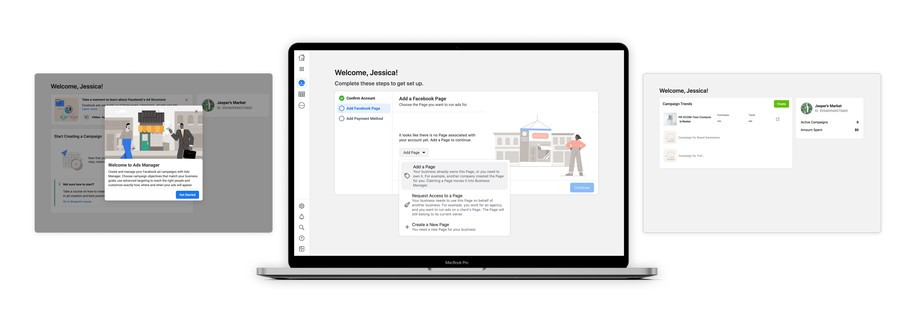
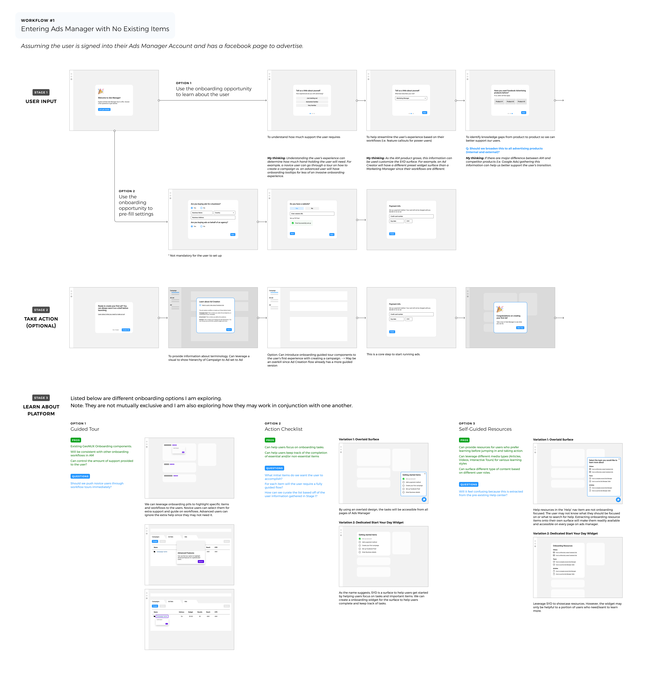

Company
Facebook
Year
2020
Type
Product Design
UX Research
Ads Manager is Facebook’s ads creation and management tool that enables businesses to manage when and where ads will run and to track how they are performing. However, the lack of an onboarding experience heightened the disparity between a new user’s cognitive ability and the challenging tasks performed resulting in a severe drop-off rate. Therefore this project aims to create a design prototype used for research and testing purposes to learn how Ads Manager can improve their new user experience.
Note: Final designs have been modified and research findings have been redacted in compliance to my NDA.

Role
As the sole designer, I co-lead project strategy with ux researcher and collaboratively conducted user & market research for a data-driven design. I designed all the new interactions, mockups and prototypes for the web application to be used for research.
Problem Space
0.5% of new users who land on AM are successfully able to publish their first ad
There are two major problem themes identified in the current experience; the lack of guidance and a steep learning curve.
- New users do not receive actionable items to get them up and running and are instead met with empty state screens.
- Disparity between user cognitive capabilities and platform tasks. New users attempt to achieve their first success without being adequately equipped with the necessary knowledge and guidance to accomplish the task.

Explorations of a potential user journey
Project Goals
Our goal is to set the advertiser up for success by reducing ambiguity around initial tasks and to ease their confusion around how Facebook Ads are created in Ads Manager.
What does success look like?
The final solution of the new user onboarding experience is heavily reliant on the assumption that success is launching an ad campaign.
Design Methods
Defining Personas
Ads manager has many different types of users from small mom and pop stores to giant billion dollar companies. It's important to understand who are the individual people using the platform, their traits, goals, and pain points.
Who are our customers?
Resource Audit
To determine which resources to use, data was collected on all Help articles and Blueprint (Facebook’s business education platform) courses within a 3 month period. This data was collected by a Data Scientist on the team to determine the performance of support content.
How can we leverage our existing resources?
Cognitive Task Analysis
The reason why the majority of our user base is considered 'Overwhelmed and not confident' is due to the abundance of tasks and decision points within the journey. By identifying and mapping each task, identifying the critical decision points, pain points and goal of our users, we can then proceed to cluster, develop themes and prioritize.
What are the primary, secondary and tertiary tasks?
Understanding the user journey of the AM Base user
Designed Solution
The design solution that emerged from the design methods applied was a linear general setup flow that first allowed new users to complete core tasks such as adding a Facebook page and payment method to their Ads Manager account. Once completed, the user will be introduced to their Account Overview surface where educational resources are provided to support their first ad creation experience. The following figure describes the step by step flow which a new user will be guided through.
- Decoupling of core tasks and key actions increases guidance and user focus
- Designing an immersive core task experience reduced confusion and friction caused by navigation
- Merging ‘Campaign Trends’ empty state with the ‘Campaign Creation’ onboarding step allows new users to revisit helpful tips if they encounter the empty state again
An immersive core task experience
Introducing help resources
Design Principles
1. Match guidance with intent
Consider the user's frame of mind to determine the right placement, frequency and level of fidelity. Identify users' intent and show guidance that matches that intent.
Show resources at the right time
2. Be clear, actionable and consistent
User simple, descriptive language and explain the purpose behind the actions users are asked to take.
3. Provide a clear path forward
Unblock users with clear specific steps for resolution. Provide inline guidance to assist users further in unblocking themselves and continuing their work.
Design Validation
To verify the design solution proposed, the designs went through multiple design reviews with the Ads Manager core team and any partner teams that were involved such as the pages and payment teams. Following this, two types of usability testing that were conducted (unmoderated remote usability testing and contextual inquiry testing) on various onboarding flows.
Two onboarding flows being tested
Conclusion
This project adequately addressed the platform problem by designing an onboarding experience and addressed the user problem by surfacing educational resources. The solution to the platform problem was then proven successful through user research studies, although more rigorous testing with a larger sample.
Next Project:
Thresholds & Alerts